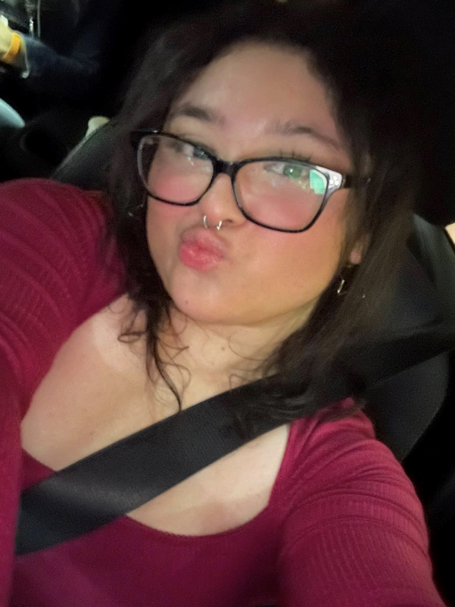

San Francisco State University
Dercely Oliva
Criminal Justice Studies
Dercely is a first-generation transfer student who attended San Joaquin Delta College before transferring to San Francisco State University. She hopes to become a crime scene technician and enjoys editing videos, gaming, and helping others.
Transfer StudentsFAFSACSU ApplicationsDorm Life
Contact Dercely